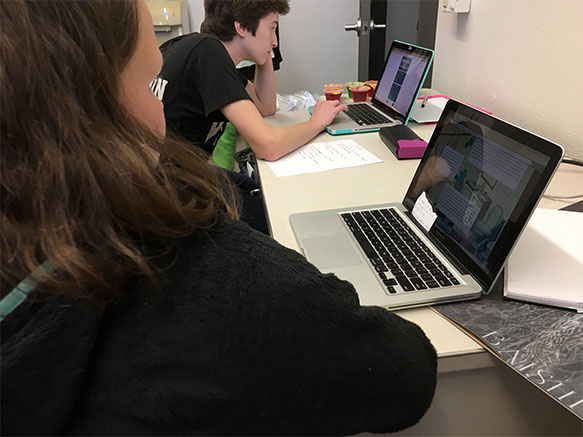
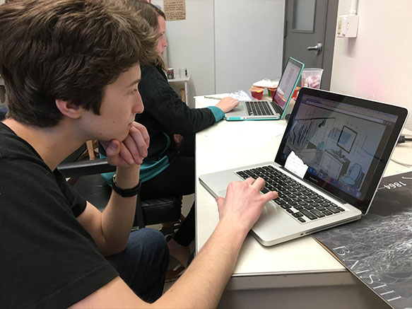
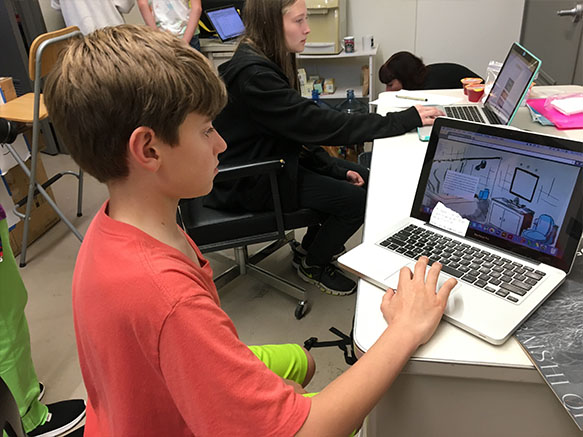

My target audience is elementary/middle school students with the project acting as an educational tool for sustainable living. The first group of testers understood within ten seconds that the blue items were interactive. As the prototype only included a few interacitve objects, the testers seemed to grow bored and distracted in about two minutes. I need to add more items for sure. As for the objects I do have on my site, I can also consider making the x for the text boxes bigger to make it more obvious. 
Feedback was largely the same as the first group. Reception was overall positive with the pleasant art style and the interactive items were obvious enough to quickly discern from the rest of the site's visuals. What stood out to me the most was the suggestion to focus my interactive items on water for my whole project, as the topic of water is more pertanent to Californians. 
Out of all the tests, this group figured out what items were interactive instantaneously. However, this meant that the user quickly ran out of objects to interact with, so the main suggestion goees back to including more things. I was also asked to consider clicking the item to pull up and hide the information for the sake of intuition. 